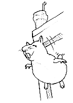

| GDT
Recycled
Works |
We're going to be bringing out some of the old issues and...
Reusing, Rehashing, Reducing, Redeeming, Redirecting, Reillustrating, Reiterating, Reviving, and regenerating.
We're generally going to be poking our noses in fiddeling around with some of the mechanical gadgetry, then cleaning it up and giving it a brand spanking new (man, some people are perverse) paint job. Any area in an issue where we've gone over the second time and realized it could have been so much more gets an overhaul.
Look for it where ever you see the recycled GDT emblem.
|
|
| GDTee Shirts |

"Eagles soar but a weasel will never get sucked into a jet engine." |
GDTee shirts are now available. These limited edition tees come in three sizes: small, medium, and large. The image of the blissful Lemme-pig leaping off of a table appears on the back along with the phrase indicated.On the front of the tee is the GDT logo over the left breast pocket area.
The price is $8 for fan club members and $10 for non-members. At this point, you're probably thinking we pocket the money. Wrong. All money made goes to help cover printing costs.
With your help (and $$$) GDT and the Melancholy Predator will remain in print, and can soon expand to eight pages.
Place orders through: diablo@csh.rit.edu or call (716) 235-7666. Remember to state the size and number you wish to order. There are a limited number available, so order soon.
Important Note: This is the last week this offer will be around, all orders must be into us by January 27th, 1996.
|
|
|